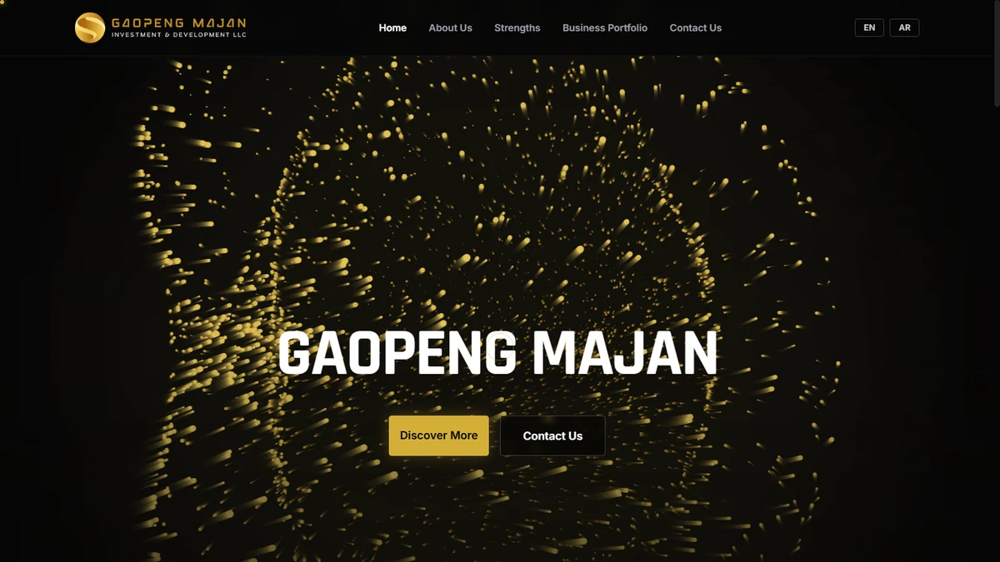

gpmajan.om

企业官网01
Gaopeng Majan
面向中阿合作的企业展示网站。以黑金视觉和粒子动效呈现品牌，组织企业介绍、业务领域、核心优势与全球网络，并提供英语与阿拉伯语浏览入口。
企业展示双语浏览粒子动效
网站作品访问网站
DESIGNED, BUILT & CARED FOR
这里是一扇小小的作品橱窗。挑一些自己喜欢的网站，记录从想法到界面的过程，也让作品继续被看见。
SELECTED WEBSITES
1 件作品 · 访问将在新窗口打开

面向中阿合作的企业展示网站。以黑金视觉和粒子动效呈现品牌，组织企业介绍、业务领域、核心优势与全球网络，并提供英语与阿拉伯语浏览入口。
YOUR IDEA COULD BE NEXT
从想法、内容与使用场景开始，一起找到它的样子。